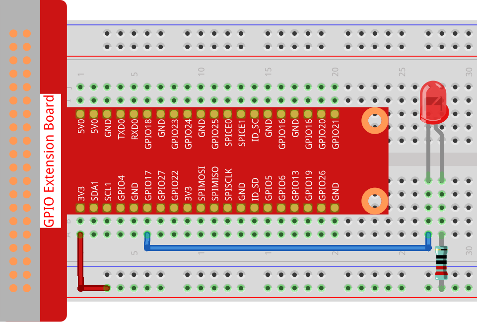

Nota
¡Hola! Bienvenido a la Comunidad de Entusiastas de SunFounder Raspberry Pi, Arduino y ESP32 en Facebook. Profundiza en Raspberry Pi, Arduino y ESP32 junto a otros entusiastas.
¿Por qué unirse?
Soporte experto: Resuelve problemas post-venta y desafíos técnicos con la ayuda de nuestra comunidad y equipo.
Aprender y compartir: Intercambia consejos y tutoriales para mejorar tus habilidades.
Acceso exclusivo: Obtén acceso anticipado a anuncios y adelantos de nuevos productos.
Descuentos especiales: Disfruta de descuentos exclusivos en nuestros productos más recientes.
Promociones y sorteos: Participa en sorteos y promociones festivas.
👉 ¿Listo para explorar y crear con nosotros? Haz clic en [Aquí] y únete hoy mismo!
1.1.1 LED parpadeante
Introducción
En esta lección, aprenderemos a hacer que un LED parpadee mediante programación. A través de tus configuraciones, tu LED puede producir una serie de fenómenos interesantes. Ahora, ¡manos a la obra!
Componentes

Nota
Para proceder sin inconvenientes, necesitas traer tu propia Raspberry Pi, tarjeta TF y alimentación para Raspberry Pi.
Principio
Protoboard
Una protoboard es una base de construcción para la creación de prototipos electrónicos. Se utiliza para construir y probar circuitos rápidamente antes de finalizar cualquier diseño de circuito. Tiene muchos orificios en los que se pueden insertar los componentes mencionados anteriormente, como ICs y resistencias, así como cables puente. La protoboard te permite conectar y quitar componentes con facilidad.
La imagen muestra la estructura interna de una protoboard completa. Aunque estos orificios en la protoboard parecen independientes entre sí, en realidad están conectados entre sí a través de tiras de metal internamente.

LED
El LED es un tipo de diodo. El LED solo brillará si el pin largo está conectado al electrodo positivo y el pin corto está conectado al electrodo negativo.


El LED no puede conectarse directamente a la fuente de alimentación, ya que puede dañar el componente. Debe conectarse en serie una resistencia de 160Ω o mayor (funcionando a 5V) en el circuito del LED.
Resistencia
La resistencia es un elemento electrónico que puede limitar la corriente de una rama. Una resistencia fija es un tipo de resistencia cuyo valor no puede cambiarse, mientras que el de un potenciómetro o una resistencia variable puede ajustarse.
Se utiliza una resistencia fija en este kit. En el circuito, es esencial para proteger los componentes conectados. Las siguientes imágenes muestran un objeto real, una resistencia de 220Ω y dos símbolos de circuito comúnmente usados para resistencias. Ω es la unidad de resistencia y las unidades más grandes incluyen KΩ, MΩ, etc. Su relación se puede expresar de la siguiente manera: 1 MΩ = 1000 KΩ, 1 KΩ = 1000 Ω. Normalmente, el valor de la resistencia está marcado en ella. Así que si ves estos símbolos en un circuito, significa que hay una resistencia.


Al usar una resistencia, primero necesitamos conocer su valor. Aquí hay dos métodos: puedes observar las bandas en la resistencia o usar un multímetro para medir la resistencia. Se recomienda usar el primer método, ya que es más conveniente y rápido. Para medir el valor, utiliza el multímetro.
Como se muestra en la tarjeta, cada color representa un número.

Diagrama Esquemático
En este experimento, conecta una resistencia de 220Ω al ánodo (el pin largo) del LED, luego conecta la resistencia a 3.3 V y conecta el cátodo (el pin corto) del LED a GPIO17 de la Raspberry Pi. Por lo tanto, para encender un LED, necesitamos establecer el GPIO17 en un nivel bajo (0V). Podemos obtener este fenómeno mediante programación.
Nota
Pin11 se refiere al undécimo pin de la Raspberry Pi de izquierda a derecha, y sus correspondientes números de pin wiringPi y BCM se muestran en la siguiente tabla.
En el contenido relacionado con el lenguaje C, hacemos que GPIO0 sea equivalente a 0 en el wiringPi. En el contenido relacionado con el lenguaje Python, BCM 17 es 17 en la columna BCM de la siguiente tabla. Al mismo tiempo, son equivalentes al undécimo pin de la Raspberry Pi, Pin 11.
T-Board Name |
physical |
wiringPi |
BCM |
GPIO17 |
Pin 11 |
0 |
17 |

Procedimientos Experimentales
Paso 1: Construir el circuito.
{kind=link}
Paso 2: Ve a la carpeta del código.
Si usas una pantalla, se recomienda que sigas estos pasos.
Ve a ~/ y encuentra la carpeta davinci-kit-for-raspberry-pi.
Encuentra C en la carpeta, haz clic derecho sobre ella y selecciona Abrir en Terminal.

Luego, aparecerá una ventana como se muestra a continuación. Así que ahora has ingresado a la ruta del código 1.1.1_BlinkingLed.c.

En las siguientes lecciones, utilizaremos comandos para acceder al archivo de código en lugar de hacer clic derecho. Pero puedes elegir el método que prefieras.
Si accedes a la Raspberry Pi de forma remota, usa
cdpara cambiar de directorio:
cd ~/davinci-kit-for-raspberry-pi/c/1.1.1/
Nota
Cambia el directorio a la ruta del código en este experimento usando cd.
De cualquiera de las maneras, ahora estás en la carpeta C. Los procedimientos posteriores basados en estos dos métodos son los mismos. Continuemos.
Paso 3: Compila el código.
gcc 1.1.1_BlinkingLed.c -o BlinkingLed -lwiringPi
Nota
gcc es GNU Compiler Collection. Aquí, funciona como compilador del archivo de lenguaje C 1_BlinkingLed.c y genera un archivo ejecutable.
En el comando, -o significa salida (el carácter inmediatamente
siguiente a -o es el nombre del archivo que se generará tras la compilación, y se generará un ejecutable llamado BlinkingLed) y -lwiringPi es para cargar
la biblioteca wiringPi (l es la abreviatura de biblioteca).
Paso 4: Ejecuta el archivo ejecutable generado en el paso anterior.
sudo ./BlinkingLed
Nota
Para controlar el GPIO, necesitas ejecutar el programa con el
comando, sudo (superusuario). El comando ./ indica el directorio actual.
El comando completo es para ejecutar BlinkingLed en el
directorio actual.

Después de que el código se ejecute, verás el LED parpadeando.
Nota
Si no funciona después de ejecutarlo, o si aparece un mensaje de error: «wiringPi.h: No such file or directory», consulta c code is not working?.
Si deseas editar el archivo de código 1.1.1_BlinkingLed.c, presiona Ctrl + C
para detener la ejecución del código. Luego, escribe el siguiente comando para abrirlo:
nano 1.1.1_BlinkingLed.c
Nota
nano es una herramienta de editor de texto. El comando se utiliza para abrir el
archivo de código 1.1.1_BlinkingLed.c mediante esta herramienta.
Presiona Ctrl+X para salir. Si has modificado el código, aparecerá un
mensaje preguntando si deseas guardar los cambios o no. Escribe Y (guardar)
o N (no guardar). Luego presiona Enter para salir. Repite Paso 3
y Paso 4 para ver el efecto después de modificar.

Código
El código del programa se muestra a continuación:
#include <wiringPi.h>
#include <stdio.h>
#define LedPin 0
int main(void)
{
// Si la inicialización de wiring falla, imprime un mensaje en la pantalla
if(wiringPiSetup() == -1){
printf("setup wiringPi failed !");
return 1;
}
pinMode(LedPin, OUTPUT);// Establece LedPin como salida para escribirle un valor.
while(1){
// LED encendido
digitalWrite(LedPin, LOW);
printf("...LED on\n");
delay(500);
// LED apagado
digitalWrite(LedPin, HIGH);
printf("LED off...\n");
delay(500);
}
return 0;
}
Explicación del Código
include <wiringPi.h>
La biblioteca de control de hardware está diseñada para el lenguaje C de la Raspberry Pi. Añadir esta biblioteca facilita la inicialización del hardware, y la salida de puertos de I/O, PWM, etc.
#include <stdio.h>
Biblioteca estándar de I/O. La función pintf utilizada para imprimir los datos que se muestran en la pantalla se realiza mediante esta biblioteca. Hay muchas otras funciones de rendimiento que puedes explorar.
#define LedPin 0
El pin GPIO17 de la T_Extension Board corresponde al GPIO0 en wiringPi. Asignamos GPIO0 a LedPin, por lo que LedPin representa GPIO0 en el código posterior.
if(wiringPiSetup() == -1){
printf("setup wiringPi failed !");
return 1;
Esto inicializa wiringPi y asume que el programa que lo llama va a usar el esquema de numeración de pines de wiringPi.
Esta función necesita ser llamada con privilegios de root. Cuando la inicialización de wiring falla, imprime un mensaje en la pantalla. La función «return» se utiliza para salir de la función actual. Usar return en la función main() finalizará el programa.
pinMode(LedPin, OUTPUT);
Establece LedPin como salida para escribirle un valor.
digitalWrite(LedPin, LOW);
Establece GPIO0 en 0V (nivel bajo). Dado que el cátodo del LED está conectado a GPIO0, el LED se encenderá si GPIO0 se establece en bajo. Por el contrario, si GPIO0 se establece en alto, digitalWrite (LedPin, HIGH): el LED se apagará.
printf("...LED off\n");
La función printf es una función de la biblioteca estándar y su prototipo de función se encuentra en el archivo de encabezado «stdio.h». La forma general de la llamada es: printf(» cadena de control de formato «, columnas de salida). La cadena de control de formato se utiliza para especificar el formato de salida, que se divide en cadena de formato y cadena no formateada. La cadena de formato comienza con “%” seguido de caracteres de formato, como “%d” para la salida de enteros decimales. Las cadenas no formateadas se imprimen como prototipos. Lo que se usa aquí es una cadena no formateada, seguida de «n», que es un carácter de nueva línea, representando un salto de línea automático después de imprimir una cadena.
delay(500);
Delay (500) mantiene el estado actual de HIGH o LOW durante 500ms.
Esta es una función que suspende el programa durante un periodo de tiempo. Y la velocidad del programa está determinada por nuestro hardware. Aquí encendemos o apagamos el LED. Si no hay una función de delay, el programa ejecutará todo el código muy rápidamente y en un bucle continuo. Así que necesitamos la función de delay para ayudarnos a escribir y depurar el programa.
return 0;
Normalmente, se coloca al final de la función principal, indicando que la función devuelve 0 al ejecutarse con éxito.